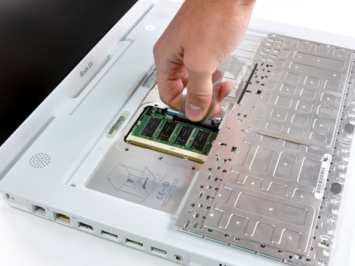

iBook G4
This notebook was same as the iBook G3 Snow, but Apple added a PowerPC G4 chip to the iBook line on October 23, 2003, finally ending Apple’s use of the PowerPC G3 chip. A slot-loading optical replaced the disk tray. The iBook G4 notebook also features an opaque white case finish and keyboard and a plastic display hinge. This is also the last iBook laptop released befor the MacBook era replaced the iBook line in 2006.

Expandability and upgrades -
Now this was a very important part of the iBooks
The iBook’s keyboard lifts up, allowing installation of the AirPort card and as additional memory. This gives the keyboard a “spongy” effect, especially in PowerPC G3 models with the translucent keyboard. The “sponginess” was corrected in the PowerPC G4 models.
Accessing the hard disk drive is complex and time consuming, involving partial disassembly of the unit and the removal of over 30 different-sized screws.
The memory in the iBook G4 is covered by a removable AirPort card, and accessible by removing RAM shield Phillips#00 screwdriver. While some of the earlier models (e.g., 800 MHz and 933MHz) Have a specified 640 MB RAM limit, it is possible to have a total of 1.12 GB OF RAM installed (128 MB inbuilt and 1 gig SO-DIMM), or 1.25 or 1.2 gigs in the later models.
Although no longer officially supported by macOS versions beyond those given in the chart above, the system has also been supported by MorphOS - an Amiga computable Operating System - since version 3.2.